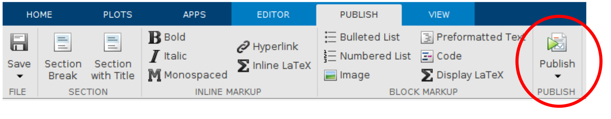
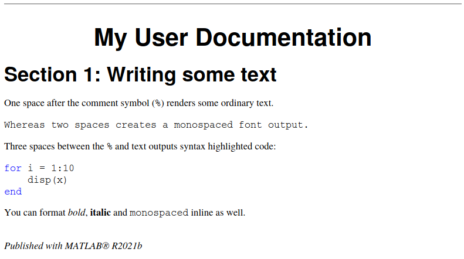
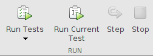

Image produced by DreamStudio
In research, it is of utmost importance to the scientific process to be able to reproduce research findings in order to establish their validity. However, more often than not, the code that is written for research purposes cannot be easily run again, sometimes even by the code’s authour (yours truly included!).
This year, I’ve been awarded a fellowship by the Software Sustainability Institute to develop guidance and training to help researchers who use MATLAB to find and learn the tools that they need to easily produce better research by making their code reproducible.
During my PhD and postdoctoral research, I used MATLAB, among other languages, to analyse data, run simulations, make figures and control instrumentation. However, at the time, I didn’t know about the concepts required to make my code reproducible for myself and others. Over the last few years, as a Research Software Engineer, I’ve gained the experience needed to develop reproducible software in a range of languages including MATLAB. Now it’s time to share what I’ve learned with everyone!
This blog post should serve as a very brief set of signposts to some of the concepts you can use to develop a reproducible project in MATLAB. You can expect more to come throughout my fellowship, so watch this space.
What is reproducibility?
When performing some research via any method, the most basic expectation is that the results should be able to be validated somehow, otherwise how can they be trusted? The most basic version of this is that by following the same methods of the researchers who originally performed a piece of work, you should be able to get to the same conclusions. This is essentially the concept of reproducibility, research should be able to be reproduced in order to validate its conclusions.
When it comes to research code, it should be relatively easy to reproduce, right? There are no complicated experiments to run again, or data to collect, so it should be a given, shouldn’t it?
In practice, we find that exact versions of software dependencies or the toolboxes required are not documented alongside a project, or it isn’t even clear how to get the right data into the software or run the code at all. This means that even with the original code available to you, it might not be possible to run the code, or worse, it could produce incorrect results.
The goal of crafting a reproducible software project should be to produce a compendium of code, data and documentation that anyone should be able to pick up and run, generating the same results that you did initially. Reproducible software development practices are also just good practice in general, if you’ve followed good practice in the first place, when you come back to a project in several months’ or years’ time (or just on Monday morning), you should be able to make improvements, re-run the code or validate your results.
How to write reproducible MATLAB?
Here are some tools and concepts you can use to improve the reproducibility of your MATLAB project. Many are the same concepts you’ll find recommended for most research software (and most software) projects, with some specific guidance on how to implement these in MATLAB.
Coding style
Writing code that is readable should be your very first port of call for reproducibility. Not just for your colleagues and collaborators, but for yourself.
In brief, you should:
- Include comments that explain what your code is doing,
- Use self-explanatory variable, function and class names,
- Write modular code. Each function, for instance, should just do one job and be reusable at other places in your code,
- Avoid duplication. Write the code that does one job just once and write a function that you can call.
A useful online resource for MATLAB coding style is the MATLAB Programming Style Guide, based on Richard Johnson’s book, The Elements of MATLAB style, also available on MATLAB’s FileExchange. Why not have a skim through this succinct resource before starting your next project?
Project organisation
The first thing that makes a project difficult to reproduce is when you open the project folder to find a big heap of confusingly named scripts.
Use folders/directories to organise your project, so that it is obvious (to you and anyone else who uses your code) where to find what is needed.
At the very top level of your project, why not have something like the following structure?
├── data/ # directory to contain your data
│ └── raw/ # all your raw, unprocessed data
│ └── processed/ # any data that you have altered
├── figures/ # keep the figures that you produce from your code here
├── reports/ # a clear folder for your papers or reports for the project
├── src/ # source code
│ └── @MyClass/ # a class directory
│ └── a_module/ # a directory containing a group of functions or classes with some commonality
│ └── utils/ # a directory containing utility functions
├── docs/ # documentation
├── tests/ # software tests for the project
├── README # readme file! (essential)
└── my.prj # MATLAB project file (read on for more details)For more in depth guidance on how to organise a project (and loads of other excellent advice) check out the BES’ guide to Reproducible Code - I still refer to this guide regularly.
Documentation
Your users (that includes you) will thank you when they encounter some actual guidance on how to use your code - maybe they’ll actually use it! Imagine that!
It’s a great idea to version control your documentation alongside your project (see version control section below) so that it remains up to date with changes in your code and the two don’t get out of sync with each other.
Therefore, you need to write your documentation in a format that can be handled by your version control system (most likely, git) - e.g. as text files, and not a PDF, word document or google doc. A number of tools exist for doing this outside of MATLAB, be it read the docs, roxygen2 or another documentation generator. You could even just write your documentation in LaTeX and combine with a tool to automatically render a pdf (see CI/CD below).
Of course, you can use these tools for your MATLAB project. Your documentation is written in a raw text format such as markdown (like this blog post), or reStructuredText, MATLAB itself isn’t being used to execute code in the documentation. A documentation generator will process your raw text into a nice PDF or webpage. You could even run your documentation generator just using a continuous deployment tool such as github actions and never install or run the tool on your local machine at all!
See this MATLAB Answers thread for a few examples of documentation generators to use with MATLAB.
However, if you want to work purely in MATLAB, it has the tools to generate HTML or PDF (or even powerpoint) from an m-file, which can be version controlled alongside your code.
Generating documentation with MATLAB
The tools for generating documentation from MATLAB are relatively immature, however there are plenty of functions available as part of the MATLAB Report Generator which you can use for building documentation.
Take, for example, a file called docs.m which uses the MATLAB markup syntax to format some documentation.
%% My User Documentation
%% Section 1: Writing some text
%%
% One space after the comment symbol (|%|) renders some ordinary text.
%
% Whereas two spaces creates a monospaced font output.
%
% Three spaces between the |%| and text outputs syntax highlighted code:
%
%
% for i = 1:10
% disp(x)
% end
%
% You can format _bold_, *italic* and |monospaced| inline as well.Try copying this code into a new m-file now. You can then publish your new documentation to an HTML file or PDF from the Publish tab in MATLAB:

Clicking the down arrow opens a menu, with the bottom option being Edit publishing options... where you can edit the publishing options on a per-file basis. You can choose to output HTML, PDF, latex or XML as well as edit a number of other options.
If you output to PDF, you’ll get some output that looks like this:

You can also publish programmatically, using the publish function (documentation here)
options = struct('format', 'pdf', 'outputDir', 'docs');
publish("docs.m", options);Whilst not shown here, these files can contain executable code, see this blog article for an example, and there are many other tools for generating reports and documents from within MATLAB.
Version control
Version control is far more than these two words suggest, and enables a far more secure, dynamic and collaborative approach to developing code than without it. Of course, this is far more wide-ranging than just MATLAB, and as RSEs our first recommendation to researchers is to employ a version control system if they don’t already. Spending time learning how to use git, for instance, will pay dividends.
Why use version control?
A version control system (VCS) allows you to capture snapshots of your code as you develop, meaning that you can go back if you want to. Furthermore, you can create branches to try out new ideas without fear of breaking your existing code - your main branch is still there! All this without making numerous copies and archives of your code. A VCS also allows you to merge one branch into another; so when you’re happy with your feature branch (where you try out a new idea), you can combine it with your main branch!
Using a VCS simply for developing code on your own machine is a great idea. But online platforms such as GitHub and GitLab add a host of excellent tools to facilitate collaboration, project management and distribution of your code.
Which version control system?
At the time of writing, there is one answer to this question, namely git. Originally developed in 2006, git has become the de facto standard VCS and for many developers is synonymous with the concept. As a researcher you may, however, come across older codebases controlled with other systems such as Subversion (SVN) or Mercurial, but git is the way to go for new projects at present.
How?
This is the one point here in which I can not currently (April 2022, MATLAB release R2022a) recommend the tools provided within MATLAB and would advise alternatives for version control. It may be that MathWorks will put out some improvements in the future, at which time I’ll aim to revise this post.
Far better (and free) alternatives to MATLAB’s tools exist for interacting with git, my current favourite is the GitKraken Client - it provides a great user interface with access to most (if not all) of the major operations you’re likely to want to do both with git and GitHub (or GitLab, BitBucket or Azure DevOps). Not to mention it has a great name. Helpfully, most of the terminology used (pull, fetch, rebase, fork, clone) comes from the core tools (git & GitHub) themselves, so anything you learn can generalise to other tools.
It would be irresponsible to attempt to provide instruction on using git here and there are many resources to learn from, not least the courses run by RSE teams!
Testing
Software testing means writing code that checks that your code is doing its job correctly. Most languages have a method for doing this and it’s an excellent habit to get into.
At first, stopping to write a test may seem like a hinderance, however you’ll soon find that an automated check to your code will save you time and confusion in the long-run.
Let’s have a look at writing some simple tests in MATLAB, so you can see what I mean.
Script-based ‘testing’
Ideally your code should be organised into functions and/or classes, however it is possible to do some level of validation with scripts, by using the assert function. assert checks a condition and throws an error if the condition is false, asserting that the condition is true.
For example (from the assert documentation)
minVal = 7;
x = 26;
assert(minVal < x)will throw an error if minVal is greater than x.
You can use these throughout your scripts to check for some sources of errors and use any condition that returns a logical such as isa() to check a variable’s type or size to check the dimensions of an array.
assert can also take a string argument as a message to print if the condition is not met.
assert(minVal < x, 'value is not greater than minVal')For information on script-based unit testing in MATLAB, see the official docs here
Function-based testing
If your code is organised into functions (and/or classes), you can use the function-based and class-based testing frameworks to test those functions with a test suite. The function-based testing framework is a little simpler, but a big improvement on the use of assert above.
Types of test can briefly be categorised as:
- Unit tests - test individual ‘units’ of code, most often a function.
- Integration tests - test the operation of multiple units integrated together.
- Regression tests - test that the overall operation of the code is not damaged by new changes, in other words, that the code has not regressed.
For a simple example of a unit test, let’s say you have a function called add which adds together two values and returns the result that looks like this:
function result = add(a,b)
result = a + b;
endGenerally, you might have a folder in your project called tests, inside which you put a file called, for instance, test_add.m with the contents:
%% Main function to generate tests - you don't need to change this
function tests = exampleTest
tests = functiontests(localfunctions);
end
%% Test Functions
function test_add(testCase)
a = 1;
b = 2;
actual_result = add(a,b);
expected_result = a + b;
verifyEqual(testCase, actual_result, expected_result)
endSimilarly to what we saw above, an error will be raised if the wrong result is produced. However in this case, rather than running as part of your main code, this test suite is run during development when making changes to verify that everything is still working as expected. (Perhaps as part of continuous integration below).
We can run all of our tests for a project from the MATLAB desktop under the Editor tab, including running tests with the debugger.

Next steps in testing
As mentioned above, MATLAB provides more featureful tools for testing under the class-based testing framework; tools for testing applications and more. I may put together a blog post on these in the future.
Licensing/open source
It is a common misconception that MATLAB code can not be released as open source because MATLAB itself is a proprietary language. This is not the case at all, just look at MATLAB’s File Exchange to see thousands of examples of users sharing their code.
Software licensing is perhaps too big a discussion to be a subsection of a blog post, but the takeaway points here should be:
- Release your code publicly, let others use it and cite your research and build upon it, have a bigger impact on the research community,
- If you do not include a license at all, nobody can legally use your code, include a license that permits the kind of use that you want to, check out https://choosealicense.com/ to help you pick one,
Collaborative hosting/GitHub/GitLab
Hosting your code on an online hosting platform such as GitHub or GitLab brings a tremendous number of benefits, including (but not limited to):
- Acting as a reliable, remote backup,
- Facilitating collaboration and sharing of code,
- A plethora of project management tools alongside your code, making it easier to keep track of what work needs doing,
- Public hosting of your code, making it easier to share,
- Continuous Integration/Deployment tools (e.g. GitHub Actions) which, for instance, can be used to render documentation, run tests and many more things,
Whilst not difficult to learn, there is too much to cover here, but in essence the basic process is:
- Start a new repository on GitHub,
- Push your local repository (version controlled by
git) to the remote on GitHub, - Make changes on a new branch locally and push them to GitHub,
- Open a pull request to discuss merging your branch into the main one,
- Merge the changes,
- Locally, pull the new changes on the main branch,
- Continue working with the new changes and repeat!
MATLAB “Projects”
Since R2019a, MATLAB has included the Projects tool with the goal of improving collaboration and portability. Have you ever been sent code by a colleague and found that you can’t run it at all because you’re missing a bunch of dependent toolboxes and functions? This is one of the problems that Projects attempt to solve.
By creating a Project and adding all the relevant files needed to run the code, you should be able to pass on the code and project file (.prj) to someone else; they can open the Project and all the right files will be added to the path, any particular actions that you specify can be run, among other actions.
Projects also allow you to run a dependency analysis, to report which other code yours depends on, and therefore needs to be considered for reproducibility.
Remember! include your .prj file under version control.
Continuous integration and continuous deployment
These might sound pretty scary, but all I really mean is: “actions that run automatically”, maybe when you make changes to your code, or on a particular schedule for instance. These can do things such as running tests or updating the documentation. There are lots of tools for this such as Travis, CircleCI, Jenkins etc. but here I’m going to concentrate on GitHub Actions because it’s an increasingly popular tool and one that I’ve used with MATLAB myself.
In brief, GitHub actions is a really, really, really useful tool! Some examples of things I’ve done with actions when using MATLAB are: running tests when a pull request is made so that we can see that the new code works and doesn’t break anything before we merge it; automatically compiling a standalone application and an installer for any new releases; and at the same time publishing a PDF of user documentation and uploading it to the project’s release page automatically.
MathWorks have made a number of actions available for use on GitHub under the matlab-actions organisation, for an overview, see this repo.
To learn more about GitHub actions, have a look at this learning resource. Basically all you have to do is include a .yml file in the .github/workflows/ folder of your project hosted on GitHub.
The actions available for MATLAB at present are reasonably limited, but versatile, at the moment they’re available to:
- Run Tests - to automatically run a test suite, and
- Run a MATLAB command - which allows you to do anything you can write the MATLAB code for, for instance:
- you could run MATLAB’s
checkcodefunction against the repo to look for problems in the code so you don’t have to look for them manually, - or publish your [documentation][#Documentation] as HTML and use it to make a GitHub pages website containing docs for your code,
- or when a new release is made, build and share your toolbox to the MATLAB file exchange!
- you could run MATLAB’s
You can also combine these with one of the many actions from the GitHub actions marketplace even further extending the possibilities!
These MATLAB-specific actions can be run on GitHub actions’ cloud computing for free for public projects hosted on GitHub (just another reason to go open source! 😀), but if your project is private, you can still use GitHub actions by setting up a self-hosted runner on your own computing infrastructure, I used a VM hosted by my university to do this for a private project. Note that other actions can be run on GitHub for private repos, but private projects only get a limited amount of free time per month.
Compiling standalone applications
One way to solve the challenge of getting your code to run on other people’s computers, particularly if they don’t have a MATLAB license, is to consider building your code as a standalone application. This takes your MATLAB source code and bundles it in such a way that it can be run on a machine without a MATLAB license, and without MATLAB installed - helpful in a number of situations.
This can be achieved through point and click menus or, better yet, by writing a script to run that runs the build operation.
Note the application must be built for each operating system (Windows, Mac OS, Linux etc) and generally the build process must be run on a compatible operating system. For instance, if you want to build your program to run on Windows, the build command should be run from within MATLAB on Windows.
This is a useful tool, for instance if you want to run analysis on a machine without MATLAB installed - but isn’t a complete solution to reproducibility, and openly sharing your source code should be the first thing you think of, in my opinion.
Publishing your code with a research paper
Once you’ve done all this, how do we get to the business of actually publishing code alongside our research?! Well fortunately, everything is fairly straightforward from this point!
The first thing I’d recommend is asking a friend or colleague to attempt to reproduce your results following the instructions provided in your online repository. Remember to document where to get your data from! You could even consider submitting your work to a reprohack event! Essentially, this process of getting someone else who doesn’t know about the code to try and run it and get the same results should highlight gaps in your documentation, allowing you to fix them before sending your code out to the world.
By hosting your code on a public repository with a tool like GitHub, you’ll be able to link to the code as it was at the time of submission. At this stage, I’d recommend creating a tag to indicate the commit that the repository was at when you produced the final results. On GitHub, you can alternatively create a ‘release’. You can just use a version number and quote this in the description of your methods.
Furthermore, it’s possible to use Zenodo to create a DOI for your GitHub release so that there is a persistent identifier for that version of the codebase.
And finally…
Just try your best! Most researchers still don’t publish their code and very few projects are reproducible, so anything you can do to improve your work will get you closer.
If you want to discuss how to make your code more reproducible and don’t know what to do, book a code clinic with the RSE and Research IT teams at The University of Sheffield to see how we can help!